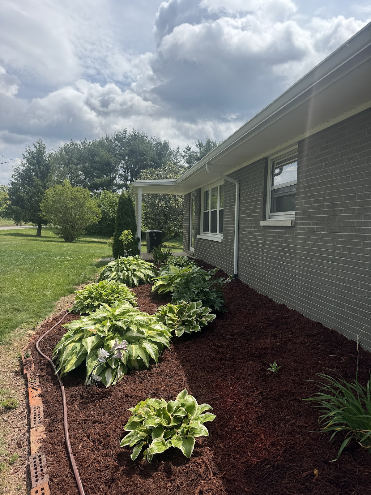
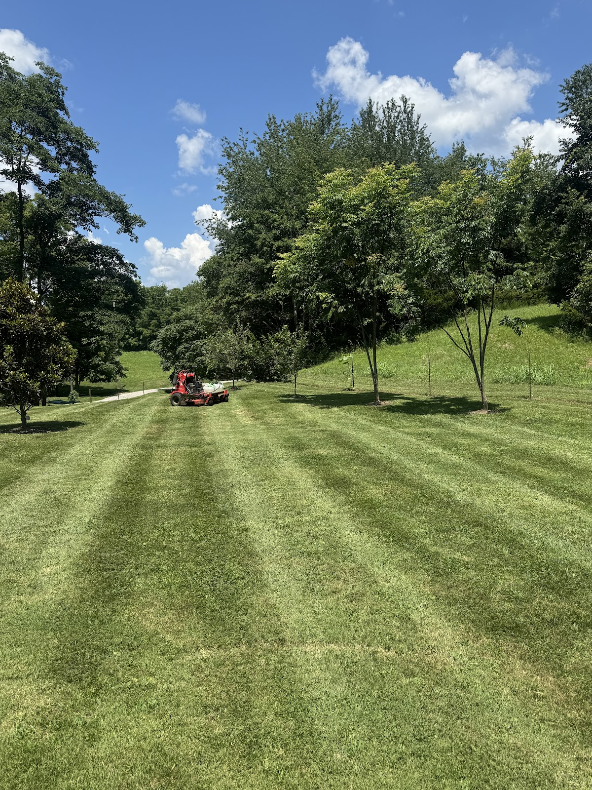
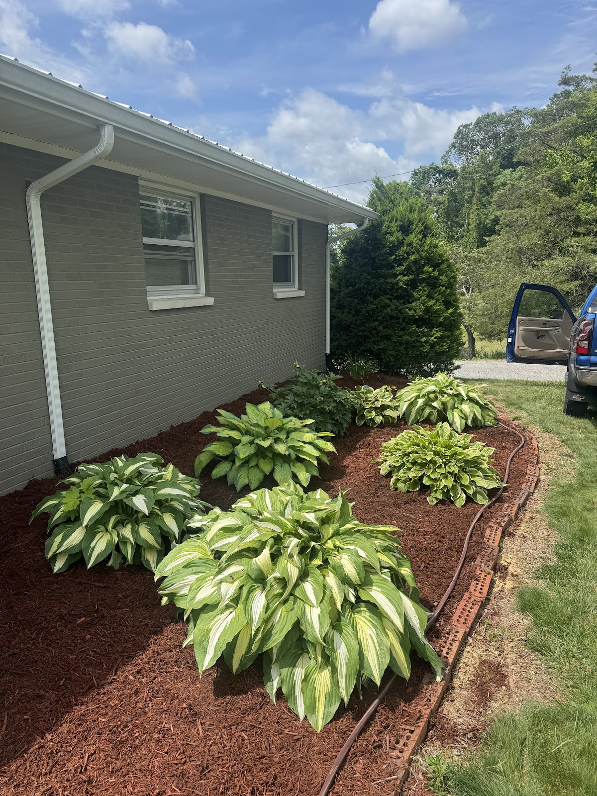

Russell Springs & the Lake Cumberland area
From a sharp-striped lawn and fresh mulch beds to excavation and storm cleanup, Authentic Outdoor Services takes care of the work around your property — on a perfect 5-star record.

Lawn care, mulch, excavation, storm cleanup — the same crew handles the whole list instead of three.
Customers describe Matthew as a great communicator who's punctual and professional from quote to finish.
A perfect 5.0 across 16 Google reviews from folks around Russell Springs and Lake Cumberland.
Regular mowing with clean stripes and tidy edges that keep the property looking cared for all season.
Fresh mulch, defined beds and trimmed plantings that set off the front of the house.
Excavation, grading and land clearing for the bigger projects that go beyond the mower.
Clearing downed limbs and storm debris — including the tree cleanup after the latest ice storm.
How a job goes
Look over the property and give you a straight price.
Mow, mulch, clear or dig — done right and on schedule.
Debris hauled off and the site tidied before we go.
Recent work


A perfect 5.0 across 16 Google reviews.
"Matthew completed multiple jobs for me and my family. He is very professional and good with communication. If you're looking for someone for your excavation or lawn care needs I would highly recommend"
"Matthew and his crew did a wonderful job cleaning up the branches from several trees that came down during the latest ice storm. He is a great communicator, punctual, and professional."
Based in Russell Springs, serving Russell Springs, the Lake Cumberland area and surrounding communities.
| Monday | 6:00 AM – 9:00 PM |
| Tuesday | 6:00 AM – 9:00 PM |
| Wednesday | 6:00 AM – 9:00 PM |
| Thursday | 6:00 AM – 9:00 PM |
| Friday | 6:00 AM – 9:00 PM |
| Saturday | 6:00 AM – 9:00 PM |
| Sunday | Closed |
Whether it's a weekly mow, a fresh bed of mulch, or a load of storm debris to clear — call or text and Matthew will get you taken care of.